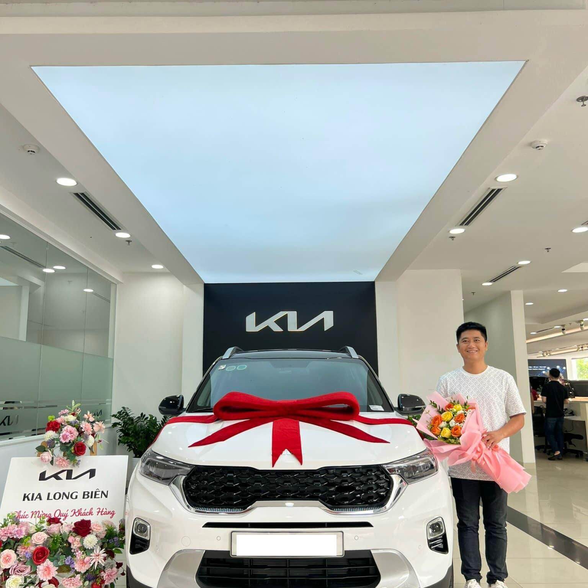

Đã từ rất lâu rồi, chúng tôi luôn tin rằng phần lớn trong số chúng ta là những người yêu xe, xe không chỉ là một công cụ đi lại mà “xe là một người bạn, một thành viên trong gia đình”
Chúng tôi không ngoại lệ, trong mỗi chúng tôi luôn luôn có một tình yêu xe vô bờ bến, một niềm đam mê khao khát được chăm sóc, sở hữu chúng một ngày không xa…
Và rồi, chúng tôi chọn sửa chữa, hàn kính xe ô tô là điểm khởi đầu cho niềm đam mê ấy…
Hàn kính xe ô tô là một nghề đầy thách thức và thú vị, bởi để có thể thực hiện được như ý muốn là cả một quá trình học hỏi đầy mồ hôi và xương máu. Tại Huy Cường Auto, chúng tôi lấy những kinh nghiệm quý báu và niềm đam mê của mình để làm công việc ấy một cách hoàn hảo nhất…
